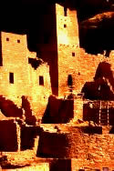

Dinosaur National Monument This monument, located in Colorado and Utah, was designated as a national monument in 1915. It was discovered by paleontologist Earl Douglass on August 17, 1909. The 200,000 acre area was layered with prehistoric plant and animal fossils and contained 350 tons of fossils, including full skeletons and remains of some dinosaur species that previously were unknown.
Colorado National MonumentThe Colorado National Monument, located in Fruita, Colorado, covers about 20,000 acres. The sheer walls and deep canyons are considered one of the grand landscapes of the American West.

Florissant Fossil Bed National MonumentVolcanic eruptions formed fossil beds when they sent lava and mud into the Florissant Basin millions of years ago. The monument is known for more than 80,000 identified animal and plant specimens and is located just west of Pikes Peak.
Hovenweep National MonumentHovenweep National Monument was established in 1923 and is found in Colorado and Utah. Located on 784 acres, the monument includes six unique prehistoric villages that date back to the mid-thirteenth century.
